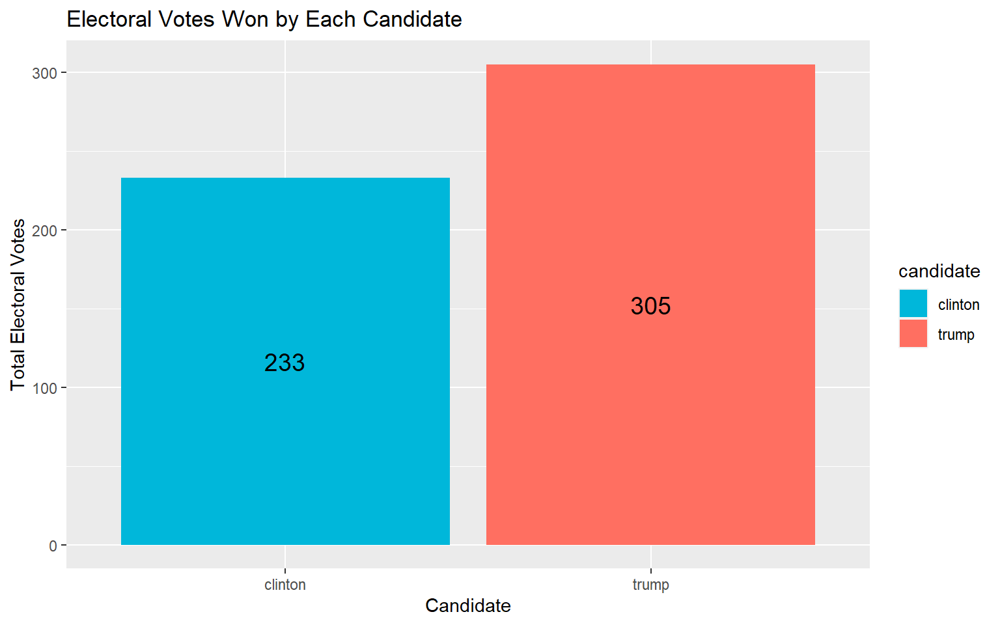
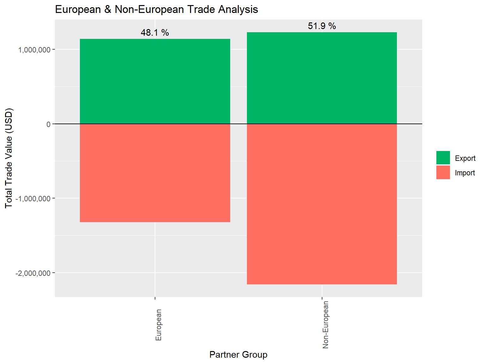
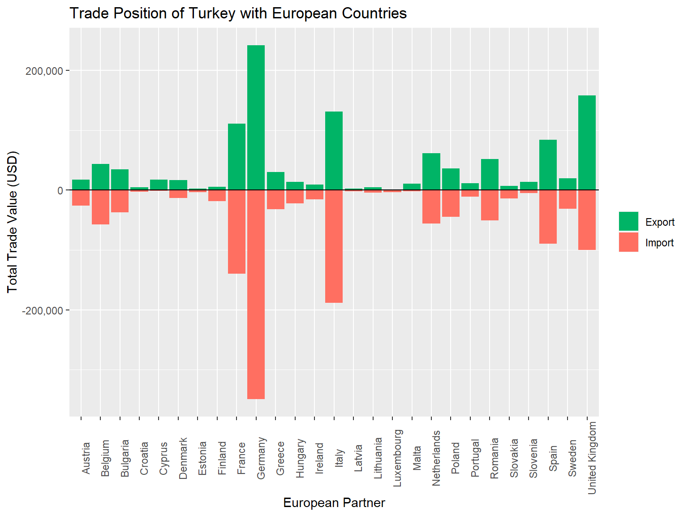
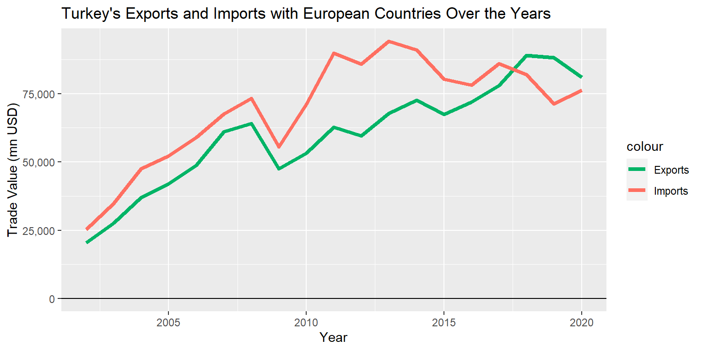
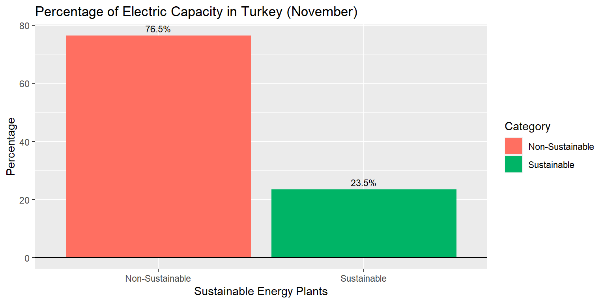

Imagine a crowded bus – outside, I might say, “Hey, move a bit, there’s space inside!” But in the middle, I’d say, “Come on, it’s already full, no more space!” This mirrors how people want AI but fear holds them back, like they’re stuck in the middle of the bus. Personally, I see AI as a helpful tool, like a colleague or an artist’s tool. Too many rules might limit its potential, like restricting a person’s freedom. Regulations should stop AI misuse without stifling innovation. AI saves time, letting us focus on important things. Balancing regulations is crucial; too many can hinder progress. Punishing misuse is key to safeguarding against harm. AI, used responsibly, enhances our abilities. In conclusion, thoughtful regulations are needed, avoiding stifling innovation while recognizing AI’s transformative role. Responsible development ensures AI is a positive force, helping us navigate the modern world.
QUESTION 2
Define Objectives: Clearly outline the goals and expected outcomes of the automated process.
Understand Current Process: Analyze the existing manual process in Excel to identify key steps and dependencies.
Data Exploration: Examine the data structure, identifying patterns and potential challenges.
Technology Assessment: Evaluate tools and platforms suitable for automation, considering scalability and compatibility.
Iterative Development: Incrementally enhance the automation, addressing specific team needs and challenges.
User Feedback: Regularly involve the team for feedback, ensuring alignment with workflow.
Testing and Validation: Rigorously test the automation for accuracy, reliability, and efficiency.
Documentation: Clearly document the automated process, aiding future troubleshooting and improvements.
Implementation: Roll out the automated solution, providing necessary training and support for a seamless transition.
QUESTION 3
In the USA, the presidential election outcome is determined by the Electoral College system, where each state contributes electoral votes based on its population. This approach emphasizes the significance of winning states with higher electoral votes rather than the raw popular vote count. The plot I chose succinctly captures this essence, displaying the total electoral votes won by each candidate in a bar chart. This visualization provides a clear, state-centric perspective on the election, showcasing the distribution of electoral power. In the 2016 election, despite winning fewer individual votes, Trump secured crucial states with higher electoral votes, leading to his overall victory. Therefore, this chart effectively highlights the pivotal role of state-level electoral dynamics in determining the ultimate winner of the presidential race.
Code
library(ggplot2)library(dplyr)library(tidyr)library(dslabs)# Load the dataset containing results of the US election 2016data <- dslabs::results_us_election_2016# Create a new 'candidate' based on the comparison of votes for Trump, Clintondata <- data %>%mutate(candidate =case_when( trump > clinton & trump > others ~'trump', clinton > trump & clinton > others ~'clinton', others > clinton & others > trump ~'others', TRUE~'tie'))# Group the data by candidate and calculate the total electoral votes for eachdata_percentage <- data %>%group_by(candidate) %>%summarise(total_electoral_votes =sum(electoral_votes))# Define colors for Trump, Clinton, and otherstrump_c <-"#FF6F61"# Soft redclinton_c <-"#00B7Da"# Coral blue# Create a bar plot to visualize the total electoral votes won by each candidateggplot(data_percentage, aes(x=candidate,y=total_electoral_votes,fill=candidate)) +geom_bar(stat ="identity") +geom_text(aes(label = total_electoral_votes), position =position_stack(vjust =0.5), size =5) +scale_fill_manual(values =c(trump =trump_c,clinton=clinton_c,others ="gray")) +labs(title ="Electoral Votes Won by Each Candidate",x ="Candidate", y ="Total Electoral Votes")

PART II : Extending Group Project
Paris Agreement: Turkey-Europe Trade and Carbon Licensing
Description
In assessing the impact of Carbon Footprint Licensing on Turkey’s trade relations with Europe, I find a critical juncture for our nation’s economic landscape. As Turkey’s major partner, the European Union demands compliance with the Paris Climate Agreement, necessitating a focus on carbon emissions in production processes. However, Turkey, in its pivotal trade with Europe, lacks preparedness for this shift, neglecting the Paris Climate Agreement’s mandates. This oversight jeopardizes our trade balance and economic stability. The impending requirement for carbon footprint licenses adds a layer of complexity, demanding urgent attention to align with European environmental standards and ensure the longevity of our trade relationships.Key Takeaways :
European Union Dominance: Europe, especially the European Union, holds a crucial role in Turkey’s trade dynamics, contributing to 48.1% of the total exports.
Climate Rules Imposition: Europe’s adoption of climate regulations, including the requirement for carbon footprint data during imports, poses a significant challenge for Turkey. This will impact the exporting process, necessitating compliance with European environmental standards.
Lack of Regulation and R&D: Turkey’s current state of missing regulations and insufficient investment in research and development (R&D) leaves it unprepared for the upcoming European mandates. Rapid adaptation is crucial to avoid potential trade disruptions.
Potential Financial Burden: The imposition of extra taxes on products with a non-zero carbon footprint creates an additional financial burden for Turkish exporters. This adds pressure to align with European standards and invest in sustainable practices to mitigate increased expenses.
Urgent Need for Adaptation: Given the imminent changes in European import regulations, Turkey must prioritize the implementation of necessary regulations, invest in R&D, and develop strategies to achieve carbon neutrality in its exports to maintain a competitive edge in its major trading partner, Europe.
Code
european_trade_data <- read_wits_turkey_data_with_partners %>%mutate(is_european =ifelse(partner_name %in% european_countries_names,"European", "Non-European"))yearly_trade_europe <- european_trade_data %>%group_by(is_european) %>%summarize(total_export=sum(trade_value_usd_exp),total_import=sum(trade_value_usd_imp))total_export <-sum(yearly_trade_europe$total_export)# Calculate the percentage of total export for each groupyearly_trade_europe <- yearly_trade_europe %>%mutate(percentage_export =ifelse(total_export >0, total_export /sum(total_export) *100, 0))# Create a bar plot to visualize the trade for European and Non-European partnersggplot(data = yearly_trade_europe, aes(x = is_european)) +geom_bar(aes(y=total_export, fill ="Export"),stat="identity",position ="dodge")+geom_bar(aes(y=-total_import,fill="Import"),stat="identity", position ="dodge")+geom_text(aes(label =paste(round(percentage_export, 1), "%"), y = total_export),position =position_dodge(width =0.9), vjust =-0.5) +labs(title ="European & Non-European Trade Analysis",x ="Partner Group", y ="Total Trade Value (USD)") +scale_fill_manual(values =c("Export"="#00B466", "Import"="#FF6F61"),name ="", labels =c("Export", "Import")) +geom_hline(yintercept =0, linetype ="solid", color ="black", size =0.5) +theme(axis.text.x=element_text(angle=90,hjust =0.5),legend.position ="right")+scale_y_continuous(labels = scales::comma_format(scale =1e-6))

European & Non-European Trade Analysis The bar plot illustrates the trade dynamics between Turkey and European and non-European partners. Notably, 48.1% of Turkey’s total trade is associated with European countries. This significant portion of trade indicates a substantial economic relationship with Europe.
It is crucial to acknowledge that this trading balance holds strategic importance, especially considering the requirements of the Paris Agreement. Turkey’s export activities, constituting almost half of its total trade, could be impacted by the evolving landscape of carbon credit requirements. Failure to align with the Paris Agreement’s carbon reduction standards might pose challenges to Turkey’s export economy, potentially affecting its overall income.
Understanding and adapting to the changing dynamics of international trade, particularly in the context of environmental regulations, will be essential for Turkey to navigate potential challenges and sustain a resilient economic outlook.
Code
european_trade_data <- read_wits_turkey_data_with_partners %>%filter(partner_name %in% european_countries_names)yearly_trade_europe <- european_trade_data %>%group_by(partner_name) %>%summarize(total_export=sum(trade_value_usd_exp),total_import=sum(trade_value_usd_imp)) # Create a bar plot to visualize the trade position of Turkey with Europeggplot(data = yearly_trade_europe, aes(x = partner_name)) +geom_bar(aes(y = total_export,fill="Export"),stat ="identity",position="dodge")+geom_bar(aes(y =-total_import,fill="Import"),stat ="identity",position="dodge")+labs(title ="Trade Position of Turkey with European Countries",x ="European Partner", y ="Total Trade Value (USD)") +scale_fill_manual(values =c("Export"="#00B466", "Import"="#FF6F61"),name ="", labels =c("Export", "Import")) +geom_hline(yintercept =0, linetype ="solid", color ="black", size =0.5) +theme(axis.text.x =element_text(angle =90, hjust =0.5),legend.position="right")+scale_y_continuous(labels=scales::comma_format(scale=1e-6))

Trade Analysis with European Countries The bar plot delves into Turkey’s trade dynamics with specific European nations. Notably, Italy, Spain, France, Germany, and the United Kingdom emerge as key players influencing Turkey’s trade balance. These major partners, however, face environmental restrictions, impacting sectors like construction.
To thrive amidst this, Turkey must prioritize carbon footprint calculations and adopt sustainable practices in exports. While challenges persist, diversifying trading partners and exploring new markets become crucial. Strategic planning for sustainable trade practices and expansion efforts will be key to navigating evolving international trade dynamics effectively.
Code
# Read the trade data with partners for Turkey and filter for European countrieseuropean_trade_data <- read_wits_turkey_data_with_partners %>%filter(partner_name %in% european_countries_names)total_exports <- european_trade_data %>%group_by(year) %>%summarize(total_exports =sum(trade_value_usd_exp))total_imports <- european_trade_data %>%group_by(year) %>%summarize(total_imports =sum(trade_value_usd_imp))# visualize Turkey's exports and imports with European countries over the yearsggplot() +geom_line(data=total_exports,aes(x=year,y=total_exports,color="Exports"),size=1.5)+geom_line(data=total_imports,aes(x=year,y=total_imports,color="Imports"),size=1.5)+geom_hline(yintercept =0, linetype ="solid", color ="black", size =0.5) +labs(title="Turkey's Exports and Imports with European Countries Over the Years",x ="Year", y ="Trade Value (mn USD)") +scale_y_continuous(labels = scales::comma_format(scale =1e-6)) +scale_color_manual(values =c("Exports"="#00B466", "Imports"="#FF6F61"))

Turkey’s Trade Dynamics with European Countries: A Post-2018 Perspective The line plot illustrates Turkey’s evolving trade relationship with European countries over the years. A notable shift is observed post-2018, where Turkey transitions from being a net importer to achieving a trade surplus, with exports surpassing imports. This shift is indicative of a positive trend in revenue-generating trade activities.
While acknowledging the potential impact of the 2019 pandemic on global trade, it is crucial to recognize the resilience showcased by Turkey in maintaining a favorable trade balance with European partners.
Sustaining this positive trade atmosphere beyond the pandemic becomes paramount. To ensure continued success, Turkey should focus on strategic measures such as diversification of export markets, exploration of new trading partners, and the implementation of sustainable practices. Maintaining this advantageous position in European markets will contribute significantly to Turkey’s economic stability and resilience.
Conclusion
In conclusion, Turkey’s strong trade ties with Europe, particularly the European Union, face a critical juncture due to impending climate regulations. With nearly half of Turkey’s exports directed to Europe, the lack of preparedness, missing regulations, and limited investment in R&D pose significant challenges. The necessity for carbon footprint data during imports, coupled with potential extra taxes for non-compliance, underscores the urgency for Turkey to adapt swiftly. To safeguard economic interests and trade relations, a proactive approach involving regulatory reforms, increased research, and sustainable practices is imperative to align with European environmental standards and ensure long-term viability in the evolving global trade landscape.
In this data analysis phase, participants navigate the challenges of gathering and cleaning data from the EPIAS Transparency Platform, specifically focusing on power plant events during November 2023. After compiling and saving the data in an .RData file, a succinct Exploratory Data Analysis (EDA) is conducted, culminating in concise insights. Collaboration is encouraged for dataset creation, and the opportunity to extend findings into a data blog post is presented.
1 Load libraries
Code
library(ggplot2)library(dplyr)library(tidyverse)
2 Load the dataset an d Check the structure
Code
#Read the data set from RDataload("data_power_plants.RData")part_three_data <- data_power_plants#Control the data type and column names#str(part_three_data)#summary(part_three_data)
Organization_Name Power_Plant_Name DAB
Length:2304 Length:2304 Length:2304
Class :character Class :character Class :character
Mode :character Mode :character Mode :character
Event_Start_Date Event_End_Date
Min. :2023-11-01 00:00:00.00 Min. :2023-11-01 03:59:00.00
1st Qu.:2023-11-10 00:00:00.00 1st Qu.:2023-11-10 07:59:00.00
Median :2023-11-18 08:41:00.00 Median :2023-11-18 22:59:00.00
Mean :2023-11-17 04:53:22.42 Mean :2023-11-17 17:20:56.60
3rd Qu.:2023-11-24 11:30:45.00 3rd Qu.:2023-11-24 23:59:00.00
Max. :2023-11-30 23:38:00.00 Max. :2024-01-13 23:59:00.00
Installed_Capacity Capacity_During_Event Reason
Min. : 0.2 Min. : 0.0 Length:2304
1st Qu.: 27.5 1st Qu.: 0.0 Class :character
Median : 150.0 Median : 25.0 Mode :character
Mean : 294.2 Mean : 117.5
3rd Qu.: 420.0 3rd Qu.: 154.0
Max. :2405.0 Max. :1800.0
Maintenance_Breakdown
Length:2304
Class :character
Mode :character
4 Exploratory Data Analysis (EDA)
Key Findings
In November 2023, Turkey’s power plants exhibited distinct performance characteristics based on their sustainability. Green Power Plants, constituting 46% of the nation’s capacity (according to “Energy Market Regulatory Authority), experienced a capacity reduction of 23.5%, showcasing relatively stable operational efficiency. The maintenance issues for these plants are yet to be precisely quantified. Conversely, Non-Green Power Plants, representing 54% of the total capacity, encountered a higher capacity reduction of 76.5%, indicating a greater susceptibility to operational disruptions. Further analysis is needed to determine the exact percentage of maintenance issues for non-green plants. This key comparison underscores the significance of sustainability in mitigating capacity reduction challenges, with green power plants demonstrating a more resilient operational profile during November 2023. Adjustments and detailed investigations based on specific dataset characteristics can provide further insights into enhancing the overall reliability and sustainability of Turkey’s energy infrastructure.
Code
data <- part_three_data %>%mutate(Environmentally_Friendly =grepl("HES|REG|REG\\.|GES", Power_Plant_Name, ignore.case =TRUE)) %>%group_by(Environmentally_Friendly) %>%summarise(Total_Capacity =sum(Installed_Capacity))data <- data %>%mutate(Percentage = Total_Capacity /sum(Total_Capacity) *100,Category =ifelse(Environmentally_Friendly, "Sustainable", "Non-Sustainable"))ggplot(data, aes(x=factor(Category),y=Percentage,fill=Category))+geom_bar(stat ="identity") +geom_text(aes(label =sprintf("%.1f%%", Percentage)), vjust =-0.5, size =3)+geom_hline(yintercept =0, linetype ="solid", color ="black", size =0.5) +labs(title ="Percentage of Electric Capacity in Turkey (November)",x ="Sustainable Energy Plants", y ="Percentage") +scale_fill_manual(values=c("Sustainable"="#00B466","Non-Sustainable"="#FF6F61"))

Key Findings
The daily capacity reduction in Turkey for November averaged less than 20,000, showcasing a generally stable operational landscape. However, November 20 emerged as a notable outlier, witnessing a substantial peak with capacity reduction exceeding 40,000. This spike indicates a specific day of heightened challenges in maintaining consistent electrical output.
Breakdowns emerged as the most prevalent issue, causing capacity to plummet to zero, signifying complete halts in power generation. On an average daily basis, around 60 events occurred, with November 20 registering the highest count, followed closely by the end of the month. Breakdowns played a pivotal role in these events, surpassing maintenance issues in frequency and impact.
Code
november_data <- part_three_data %>%mutate(Event_Start_Date =as.Date(Event_Start_Date)) %>%filter(format(Event_Start_Date, "%Y-%m") =="2023-11")daily_event_counts <- november_data %>%group_by(day =as.Date(Event_Start_Date)) %>%summarise(Stop =sum(Capacity_During_Event ==0),Maintenance =sum(Maintenance_Breakdown =="M"&Capacity_During_Event>0),Breakdown =sum(Maintenance_Breakdown =="B"&Capacity_During_Event>0))daily_event_counts_long <- daily_event_counts %>% tidyr::gather(key ="Event_Type", value ="Count", -day)ggplot(daily_event_counts_long, aes(x = day, y = Count, fill = Event_Type)) +geom_bar(stat ="identity") +geom_hline(yintercept =0, linetype ="solid", color ="black", size =0.5) +labs(title ="Daily Event Counts in Turkey (November)",x ="Date", y ="Event Count", fill ="Event Type") +scale_fill_manual(values =c("Stop"="#FF6F61", "Maintenance"="#fcb953", "Breakdown"="#40E0D0")) +theme(legend.position ="bottom")
---title: " Final Assignment"author: "Sezer Türkmen"date: "2024-01-08"format: html: code-fold: true code-tools: true number-sections: false pdf: toc: false shift-heading-level-by: 2 fig-pos: "H" fig-cap-location: top code-block-bg: "#EEEEEE" geometry: - top=1in - right=.8in - bottom=1in - left=.8in include-in-header: text: | \usepackage{fancyhdr} \usepackage{titling} \pagestyle{fancy} \fancyhf{} \renewcommand\maketitle{ \fancyhead[C]{ \thetitle \ifx \theauthor\empty \else \ – \theauthor \fi \ifx \thedate\empty \else \ – \thedate \ \fi } } \fancyfoot[C]{\thepage}---## PART I: Short and Simple### QUESTION 1Imagine a crowded bus – outside, I might say, "Hey, move a bit, there's space inside!" But in the middle, I'd say, "Come on, it's already full, no more space!" This mirrors how people want AI but fear holds them back, like they're stuck in the middle of the bus. Personally, I see AI as a helpful tool, like a colleague or an artist's tool. Too many rules might limit its potential, like restricting a person's freedom. Regulations should stop AI misuse without stifling innovation. AI saves time, letting us focus on important things. Balancing regulations is crucial; too many can hinder progress. Punishing misuse is key to safeguarding against harm. AI, used responsibly, enhances our abilities. In conclusion, thoughtful regulations are needed, avoiding stifling innovation while recognizing AI's transformative role. Responsible development ensures AI is a positive force, helping us navigate the modern world.### QUESTION 2**Define Objectives:** Clearly outline the goals and expected outcomes of the automated process.**Understand Current Process:** Analyze the existing manual process in Excel to identify key steps and dependencies.**Data Exploration:** Examine the data structure, identifying patterns and potential challenges.**Technology Assessment:** Evaluate tools and platforms suitable for automation, considering scalability and compatibility.**Iterative Development:** Incrementally enhance the automation, addressing specific team needs and challenges.**User Feedback:** Regularly involve the team for feedback, ensuring alignment with workflow.**Testing and Validation:** Rigorously test the automation for accuracy, reliability, and efficiency.**Documentation:** Clearly document the automated process, aiding future troubleshooting and improvements.**Implementation:** Roll out the automated solution, providing necessary training and support for a seamless transition.### QUESTION 3```{r include=FALSE}head(dslabs::results_us_election_2016)```In the USA, the presidential election outcome is determined by the Electoral College system, where each state contributes electoral votes based on its population. This approach emphasizes the significance of winning states with higher electoral votes rather than the raw popular vote count. The plot I chose succinctly captures this essence, displaying the total electoral votes won by each candidate in a bar chart. This visualization provides a clear, state-centric perspective on the election, showcasing the distribution of electoral power. In the 2016 election, despite winning fewer individual votes, Trump secured crucial states with higher electoral votes, leading to his overall victory. Therefore, this chart effectively highlights the pivotal role of state-level electoral dynamics in determining the ultimate winner of the presidential race.```{r fig.width=8, message= FALSE, warning=FALSE}library(ggplot2)library(dplyr)library(tidyr)library(dslabs)# Load the dataset containing results of the US election 2016data <- dslabs::results_us_election_2016# Create a new 'candidate' based on the comparison of votes for Trump, Clintondata <- data %>%mutate(candidate =case_when( trump > clinton & trump > others ~'trump', clinton > trump & clinton > others ~'clinton', others > clinton & others > trump ~'others', TRUE~'tie'))# Group the data by candidate and calculate the total electoral votes for eachdata_percentage <- data %>%group_by(candidate) %>%summarise(total_electoral_votes =sum(electoral_votes))# Define colors for Trump, Clinton, and otherstrump_c <-"#FF6F61"# Soft redclinton_c <-"#00B7Da"# Coral blue# Create a bar plot to visualize the total electoral votes won by each candidateggplot(data_percentage, aes(x=candidate,y=total_electoral_votes,fill=candidate)) +geom_bar(stat ="identity") +geom_text(aes(label = total_electoral_votes), position =position_stack(vjust =0.5), size =5) +scale_fill_manual(values =c(trump =trump_c,clinton=clinton_c,others ="gray")) +labs(title ="Electoral Votes Won by Each Candidate",x ="Candidate", y ="Total Electoral Votes")```## PART II : Extending Group Project```{r setup, include = FALSE,message=FALSE,warning=FALSE}knitr::opts_chunk$set(echo =TRUE)library(htmlwidgets)library(tidyverse)library(dplyr)library(ggplot2)library(RColorBrewer)library(ggridges)library(knitr)library(DT)library(conflicted)conflict_prefer("filter", "dplyr")conflict_prefer("lag", "dplyr")loaded_datasets <-readRDS("wits_data.rds")read_wits_turkey_data_only <- loaded_datasets$wits_turkey_data_onlyread_wits_turkey_data_with_partners <- loaded_datasets$wits_turkey_data_with_partnerssapply(read_wits_turkey_data_only, function(x) sum(is.na(x)))sapply(read_wits_turkey_data_with_partners, function(x) sum(is.na(x)))european_countries_names <-c("Austria", "Belgium", "Bulgaria", "Croatia", "Cyprus", "Czech Republic", "Denmark", "Estonia", "Finland", "France", "Germany", "Greece", "Hungary", "Ireland", "Italy", "Latvia", "Lithuania", "Luxembourg", "Malta", "Netherlands", "Poland", "Portugal", "Romania", "Slovakia", "Slovenia", "Spain", "Sweden", "United Kingdom")```### Paris Agreement: Turkey-Europe Trade and Carbon Licensing**Description**In assessing the impact of Carbon Footprint Licensing on Turkey's trade relations with Europe, I find a critical juncture for our nation's economic landscape. As Turkey's major partner, the European Union demands compliance with the Paris Climate Agreement, necessitating a focus on carbon emissions in production processes. However, Turkey, in its pivotal trade with Europe, lacks preparedness for this shift, neglecting the Paris Climate Agreement's mandates. This oversight jeopardizes our trade balance and economic stability. The impending requirement for carbon footprint licenses adds a layer of complexity, demanding urgent attention to align with European environmental standards and ensure the longevity of our trade relationships.Key Takeaways :**European Union Dominance:** Europe, especially the European Union, holds a crucial role in Turkey's trade dynamics, contributing to 48.1% of the total exports.**Climate Rules Imposition:** Europe's adoption of climate regulations, including the requirement for carbon footprint data during imports, poses a significant challenge for Turkey. This will impact the exporting process, necessitating compliance with European environmental standards.**Lack of Regulation and R&D:** Turkey's current state of missing regulations and insufficient investment in research and development (R&D) leaves it unprepared for the upcoming European mandates. Rapid adaptation is crucial to avoid potential trade disruptions.**Potential Financial Burden:** The imposition of extra taxes on products with a non-zero carbon footprint creates an additional financial burden for Turkish exporters. This adds pressure to align with European standards and invest in sustainable practices to mitigate increased expenses.**Urgent Need for Adaptation:** Given the imminent changes in European import regulations, Turkey must prioritize the implementation of necessary regulations, invest in R&D, and develop strategies to achieve carbon neutrality in its exports to maintain a competitive edge in its major trading partner, Europe.```{r fig.width=8, fig.height=6, message=FALSE,warning=FALSE}european_trade_data <- read_wits_turkey_data_with_partners %>%mutate(is_european =ifelse(partner_name %in% european_countries_names,"European", "Non-European"))yearly_trade_europe <- european_trade_data %>%group_by(is_european) %>%summarize(total_export=sum(trade_value_usd_exp),total_import=sum(trade_value_usd_imp))total_export <-sum(yearly_trade_europe$total_export)# Calculate the percentage of total export for each groupyearly_trade_europe <- yearly_trade_europe %>%mutate(percentage_export =ifelse(total_export >0, total_export /sum(total_export) *100, 0))# Create a bar plot to visualize the trade for European and Non-European partnersggplot(data = yearly_trade_europe, aes(x = is_european)) +geom_bar(aes(y=total_export, fill ="Export"),stat="identity",position ="dodge")+geom_bar(aes(y=-total_import,fill="Import"),stat="identity", position ="dodge")+geom_text(aes(label =paste(round(percentage_export, 1), "%"), y = total_export),position =position_dodge(width =0.9), vjust =-0.5) +labs(title ="European & Non-European Trade Analysis",x ="Partner Group", y ="Total Trade Value (USD)") +scale_fill_manual(values =c("Export"="#00B466", "Import"="#FF6F61"),name ="", labels =c("Export", "Import")) +geom_hline(yintercept =0, linetype ="solid", color ="black", size =0.5) +theme(axis.text.x=element_text(angle=90,hjust =0.5),legend.position ="right")+scale_y_continuous(labels = scales::comma_format(scale =1e-6))```**European & Non-European Trade Analysis**The bar plot illustrates the trade dynamics between Turkey and European and non-European partners. Notably, 48.1% of Turkey's total trade is associated with European countries. This significant portion of trade indicates a substantial economic relationship with Europe.It is crucial to acknowledge that this trading balance holds strategic importance, especially considering the requirements of the Paris Agreement. Turkey's export activities, constituting almost half of its total trade, could be impacted by the evolving landscape of carbon credit requirements. Failure to align with the Paris Agreement's carbon reduction standards might pose challenges to Turkey's export economy, potentially affecting its overall income.Understanding and adapting to the changing dynamics of international trade, particularly in the context of environmental regulations, will be essential for Turkey to navigate potential challenges and sustain a resilient economic outlook.```{r fig.width=8, fig.height=6, message=FALSE,warning=FALSE}european_trade_data <- read_wits_turkey_data_with_partners %>%filter(partner_name %in% european_countries_names)yearly_trade_europe <- european_trade_data %>%group_by(partner_name) %>%summarize(total_export=sum(trade_value_usd_exp),total_import=sum(trade_value_usd_imp)) # Create a bar plot to visualize the trade position of Turkey with Europeggplot(data = yearly_trade_europe, aes(x = partner_name)) +geom_bar(aes(y = total_export,fill="Export"),stat ="identity",position="dodge")+geom_bar(aes(y =-total_import,fill="Import"),stat ="identity",position="dodge")+labs(title ="Trade Position of Turkey with European Countries",x ="European Partner", y ="Total Trade Value (USD)") +scale_fill_manual(values =c("Export"="#00B466", "Import"="#FF6F61"),name ="", labels =c("Export", "Import")) +geom_hline(yintercept =0, linetype ="solid", color ="black", size =0.5) +theme(axis.text.x =element_text(angle =90, hjust =0.5),legend.position="right")+scale_y_continuous(labels=scales::comma_format(scale=1e-6))```**Trade Analysis with European Countries**The bar plot delves into Turkey's trade dynamics with specific European nations. Notably, Italy, Spain, France, Germany, and the United Kingdom emerge as key players influencing Turkey's trade balance. These major partners, however, face environmental restrictions, impacting sectors like construction.To thrive amidst this, Turkey must prioritize carbon footprint calculations and adopt sustainable practices in exports. While challenges persist, diversifying trading partners and exploring new markets become crucial. Strategic planning for sustainable trade practices and expansion efforts will be key to navigating evolving international trade dynamics effectively.```{r fig.width=8,fig.height=4, message=FALSE,warning=FALSE}# Read the trade data with partners for Turkey and filter for European countrieseuropean_trade_data <- read_wits_turkey_data_with_partners %>%filter(partner_name %in% european_countries_names)total_exports <- european_trade_data %>%group_by(year) %>%summarize(total_exports =sum(trade_value_usd_exp))total_imports <- european_trade_data %>%group_by(year) %>%summarize(total_imports =sum(trade_value_usd_imp))# visualize Turkey's exports and imports with European countries over the yearsggplot() +geom_line(data=total_exports,aes(x=year,y=total_exports,color="Exports"),size=1.5)+geom_line(data=total_imports,aes(x=year,y=total_imports,color="Imports"),size=1.5)+geom_hline(yintercept =0, linetype ="solid", color ="black", size =0.5) +labs(title="Turkey's Exports and Imports with European Countries Over the Years",x ="Year", y ="Trade Value (mn USD)") +scale_y_continuous(labels = scales::comma_format(scale =1e-6)) +scale_color_manual(values =c("Exports"="#00B466", "Imports"="#FF6F61"))```**Turkey's Trade Dynamics with European Countries: A Post-2018 Perspective**The line plot illustrates Turkey's evolving trade relationship with European countries over the years. A notable shift is observed post-2018, where Turkey transitions from being a net importer to achieving a trade surplus, with exports surpassing imports. This shift is indicative of a positive trend in revenue-generating trade activities.While acknowledging the potential impact of the 2019 pandemic on global trade, it is crucial to recognize the resilience showcased by Turkey in maintaining a favorable trade balance with European partners.Sustaining this positive trade atmosphere beyond the pandemic becomes paramount. To ensure continued success, Turkey should focus on strategic measures such as diversification of export markets, exploration of new trading partners, and the implementation of sustainable practices. Maintaining this advantageous position in European markets will contribute significantly to Turkey's economic stability and resilience.**Conclusion**In conclusion, Turkey's strong trade ties with Europe, particularly the European Union, face a critical juncture due to impending climate regulations. With nearly half of Turkey's exports directed to Europe, the lack of preparedness, missing regulations, and limited investment in R&D pose significant challenges. The necessity for carbon footprint data during imports, coupled with potential extra taxes for non-compliance, underscores the urgency for Turkey to adapt swiftly. To safeguard economic interests and trade relations, a proactive approach involving regulatory reforms, increased research, and sustainable practices is imperative to align with European environmental standards and ensure long-term viability in the evolving global trade landscape.**References**[*Commission President advances global cooperation on carbon pricing in high-level event at COP28*](https://ec.europa.eu/commission/presscorner/detail/en/IP_23_6092)[*World Integrated Trade Solution (World Bank)*](https://wits.worldbank.org/)## PART III : Welcome to Real LifeIn this data analysis phase, participants navigate the challenges of gathering and cleaning data from the EPIAS Transparency Platform, specifically focusing on power plant events during November 2023. After compiling and saving the data in an .RData file, a succinct Exploratory Data Analysis (EDA) is conducted, culminating in concise insights. Collaboration is encouraged for dataset creation, and the opportunity to extend findings into a data blog post is presented.```{r include=FALSE}library(readxl)file_path <-"./data_power_plants.xlsx"data_power_plants <- readxl::read_excel(file_path)save(data_power_plants, file ="data_power_plants.RData")```**1 Load libraries**```{r fig.width=8, fig.height=6, message=FALSE,warning=FALSE}library(ggplot2)library(dplyr)library(tidyverse)```**2 Load the dataset an d Check the structure**```{r fig.width=8, fig.height=6, message=FALSE,warning=FALSE}#Read the data set from RDataload("data_power_plants.RData")part_three_data <- data_power_plants#Control the data type and column names#str(part_three_data)#summary(part_three_data)```**3 Clean and Edit the dataset**```{r fig.width=8, fig.height=6, message=FALSE,warning=FALSE}colnames(part_three_data) <-c("Organization_Name", "Power_Plant_Name", "DAB", "Event_Start_Date", "Event_End_Date", "Installed_Capacity", "Capacity_During_Event","Reason", "Maintenance_Breakdown")part_three_data$Installed_Capacity <-as.numeric(part_three_data$Installed_Capacity)part_three_data$Capacity_During_Event <-as.numeric(part_three_data$Capacity_During_Event)summary(part_three_data)```**4 Exploratory Data Analysis (EDA)****Key Findings** In November 2023, Turkey's power plants exhibited distinct performance characteristics based on their sustainability. Green Power Plants, constituting 46% of the nation's capacity (according to "Energy Market Regulatory Authority), experienced a capacity reduction of 23.5%, showcasing relatively stable operational efficiency. The maintenance issues for these plants are yet to be precisely quantified. Conversely, Non-Green Power Plants, representing 54% of the total capacity, encountered a higher capacity reduction of 76.5%, indicating a greater susceptibility to operational disruptions. Further analysis is needed to determine the exact percentage of maintenance issues for non-green plants. This key comparison underscores the significance of sustainability in mitigating capacity reduction challenges, with green power plants demonstrating a more resilient operational profile during November 2023. Adjustments and detailed investigations based on specific dataset characteristics can provide further insights into enhancing the overall reliability and sustainability of Turkey's energy infrastructure.```{r fig.width=8, fig.height=4, message=FALSE,warning=FALSE}data <- part_three_data %>%mutate(Environmentally_Friendly =grepl("HES|REG|REG\\.|GES", Power_Plant_Name, ignore.case =TRUE)) %>%group_by(Environmentally_Friendly) %>%summarise(Total_Capacity =sum(Installed_Capacity))data <- data %>%mutate(Percentage = Total_Capacity /sum(Total_Capacity) *100,Category =ifelse(Environmentally_Friendly, "Sustainable", "Non-Sustainable"))ggplot(data, aes(x=factor(Category),y=Percentage,fill=Category))+geom_bar(stat ="identity") +geom_text(aes(label =sprintf("%.1f%%", Percentage)), vjust =-0.5, size =3)+geom_hline(yintercept =0, linetype ="solid", color ="black", size =0.5) +labs(title ="Percentage of Electric Capacity in Turkey (November)",x ="Sustainable Energy Plants", y ="Percentage") +scale_fill_manual(values=c("Sustainable"="#00B466","Non-Sustainable"="#FF6F61")) ```**Key Findings** The daily capacity reduction in Turkey for November averaged less than 20,000, showcasing a generally stable operational landscape. However, November 20 emerged as a notable outlier, witnessing a substantial peak with capacity reduction exceeding 40,000. This spike indicates a specific day of heightened challenges in maintaining consistent electrical output.```{r fig.width=8, fig.height=4, message=FALSE,warning=FALSE}november_data <- part_three_data %>%mutate(Event_Start_Date =as.Date(Event_Start_Date)) %>%filter(format(Event_Start_Date, "%Y-%m") =="2023-11")daily_capacity_change <- november_data %>%group_by(day =as.Date(Event_Start_Date)) %>%summarise(Daily_Capacity_Change =sum(Installed_Capacity)-sum(Capacity_During_Event))ggplot(daily_capacity_change, aes(x = day, y = Daily_Capacity_Change)) +geom_line(size =1.5) +geom_hline(yintercept =0, linetype ="solid", color ="black", size =0.5) +labs(title ="Daily Capacity Reduction in Turkey (November)",x ="Date", y ="Daily Capacity Reduction")```**Key Findings** Breakdowns emerged as the most prevalent issue, causing capacity to plummet to zero, signifying complete halts in power generation. On an average daily basis, around 60 events occurred, with November 20 registering the highest count, followed closely by the end of the month. Breakdowns played a pivotal role in these events, surpassing maintenance issues in frequency and impact.```{r fig.width=8, fig.height=6, message=FALSE,warning=FALSE}november_data <- part_three_data %>%mutate(Event_Start_Date =as.Date(Event_Start_Date)) %>%filter(format(Event_Start_Date, "%Y-%m") =="2023-11")daily_event_counts <- november_data %>%group_by(day =as.Date(Event_Start_Date)) %>%summarise(Stop =sum(Capacity_During_Event ==0),Maintenance =sum(Maintenance_Breakdown =="M"&Capacity_During_Event>0),Breakdown =sum(Maintenance_Breakdown =="B"&Capacity_During_Event>0))daily_event_counts_long <- daily_event_counts %>% tidyr::gather(key ="Event_Type", value ="Count", -day)ggplot(daily_event_counts_long, aes(x = day, y = Count, fill = Event_Type)) +geom_bar(stat ="identity") +geom_hline(yintercept =0, linetype ="solid", color ="black", size =0.5) +labs(title ="Daily Event Counts in Turkey (November)",x ="Date", y ="Event Count", fill ="Event Type") +scale_fill_manual(values =c("Stop"="#FF6F61", "Maintenance"="#fcb953", "Breakdown"="#40E0D0")) +theme(legend.position ="bottom")```**References**[*EPIAS Transperency Platform*](https://seffaflik.epias.com.tr/electricity/market-message-system)[*New about percentage of Green Energy Plants in Turkey*](https://yesilhaber.net/temiz-enerjinin-payi-yuzde-543-oldu/#:~:text=EPDK%3A%20%E2%80%9CYenilenebilir%20enerjinin%20pay%C4%B1%20y%C3%BCzde,y%C3%BCzde%2046%20oldu%C4%9Fu%20bilgisini%20verdi.)